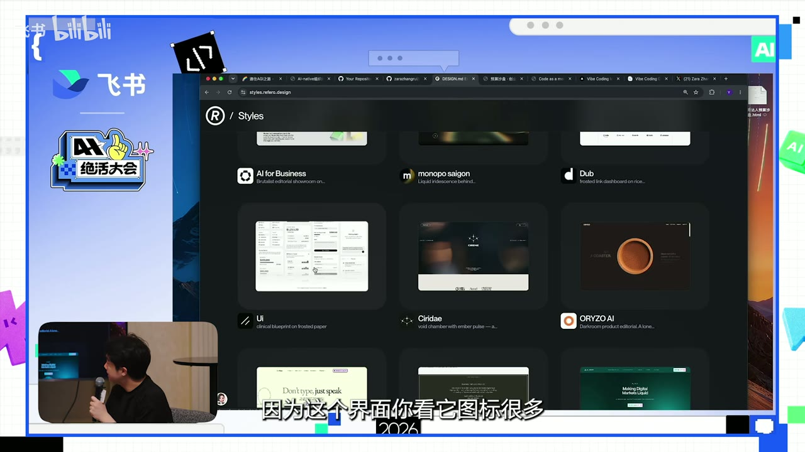

原视频 · 在线回看
点击后联网加载 B 站播放器；本地不下载整段视频。

原视频 · 在线回看
点击后联网加载 B 站播放器；本地不下载整段视频。
来源：【绝活大会】同一个 Skill，为什么别人做出来就是比你好看？
UP 主：飞书 · 时长：23 分 16 秒 · 阅读强度：深度
看到别人用 AI 做出一套漂亮的演示文稿，我们很容易先问：用了哪个 Skill？拿到同一份文件，再交给自己的助手，似乎就应该得到相近效果。可实际使用时，第一页或许还不错，接下来却可能出现内容拥挤、版式重复、图片不合适的问题。Skill 提供了方法与参考，具体作品还取决于我们让它处理什么，以及后续怎样判断和修改。
这里的 Skill 可以理解为一套交给 AI 助手反复使用的工作说明，里面还可以配有模板、参考资料或辅助程序。它帮助助手按照已有方法完成任务。接下来我们从实际作品开始，逐步看看内容、设计规则和反馈怎样进入这套方法，让作品更适合使用，也让别人能够继续使用这些方法。
招聘时，作品集中出现一个 AI 项目很容易吸引注意。但“使用了 AI”与“做成了一件有价值的事”，中间还有不少问题需要回答。内部工具有没有节省实际工作时间，是否被其他同事持续使用？面向外部的产品有没有用户，他们用完以后为什么愿意回来？这些追问帮助我们理解作品与实际需求之间的关系。
王大线在讨论中回顾了自己的招聘判断变化：早先会对候选人的 AI 作品特别兴奋，后来更愿意先看对方原有的专业作品，例如文案、视频或画面，再追问 AI 项目的实际使用情况。这个经验强调专业判断与后续使用，但不能据此认定尚未产生大量用户的练习项目没有价值。关键是把项目所处阶段、已经解决的问题和仍未完成的部分说清楚。
另一种面试设想，是分两轮观察。先离线交流候选人的专业能力与思考，再提供可以使用 AI 助手的电脑，让对方完成一项贴近未来工作的现实任务。第二轮既看作品，也看他怎样与助手沟通：任务如何拆开，结果哪里不合适，反馈是否针对具体问题。
这样一来，AI 的使用过程就与专业能力连在一起了。写作的人需要判断论证是否清楚，设计的人需要判断版面是否服务内容，运营的人需要理解实际工作流程。助手能够加快操作，人的判断仍然影响最后留下什么结果。
HTML 是网页内容使用的基础格式。结合样式和脚本，浏览器中的页面既能呈现文字与图片，也能支持点击、切换或参数调整。对于演示文稿和数据看板，这意味着材料可以在被阅读的同时响应操作。例如，改变一个参数后，页面根据已有计算规则展示另一种情境，听众就能跟着比较不同假设。
过去制作这样的页面，需要投入较多前端开发工作。能够读写代码的 AI 助手降低了制作门槛，团队因此更容易把原来的静态材料改成网页。讨论中的参与者观察到，自己接触的活动和团队越来越多地采用这种方式。这是他们所处环境中的使用经验，并不意味着所有演示都适合换成网页。
一个实际问题就发生在现场展示中：页面在原来的电脑上看起来合适，换到会议屏幕后，比例变化使内容显示不全。制作时需要考虑展示区域如何变化、内容能否完整呈现。网页能够交互，是它的一项能力；适配现场设备，则是让这项能力真正可用的条件。
飞书内部的材料复用案例更具体。团队把已经做好的页面放入资料库，添加标签，记录使用次数，并区分原创和后续调整的版本。准备新的客户介绍时，先挑选适用的客户案例和行业方案，再像购物车一样调整页面顺序，组成一套材料。
下载后，使用者还可以根据当前客户的需要修改某几页，讲完以后把效果好的版本再放回资料库。这里节省的是重复整理共同材料的工作：团队保留可复用的页面，同时允许具体任务继续调整内容。记录哪些页面常被使用，也让团队更容易知道哪些案例真正进入了日常沟通。
决定用网页承载材料之后，才来到外观问题。仅仅告诉助手“做得好看一点”，它需要自己猜测好看指什么。即使我们不熟悉字体、配色和版式术语，也可以通过已有作品表达偏好：这张图的颜色很舒服，这组页面适合数据复盘，这种标题与正文的关系适合邀请函。
王大线制作活动战报的例子里，先从设计参考网站选择适合数据展示的风格，再把相关设计文件交给助手。选择时考虑了材料本身要呈现图表，因此参考对象也偏向数据界面。这样，风格参考与任务内容已经有了联系，助手不必只凭一个抽象形容词开始探索。
内容准备与页面制作也分成了两步。先从活动消息与作品中整理出复盘文档，检查里面的内容是否完整、准确，再进入网页制作。到了第二步，把确认过的文档与选好的设计文件一起提供，助手就同时获得了“要讲什么”和“希望怎样呈现”两类信息。
分开处理的好处很直接：内容还没定时，先讨论内容；内容已经清楚后，再检查版式是否把它表达好。否则，漂亮页面很容易让人忽略缺失的材料，也容易使每次内容修改都牵动整套排版。这个例子里，审阅文档属于真正的内容工作，页面生成接在它之后。
Zara 制作模板的起点更日常。她会收集喜欢的图片与配色，也会拍下书的封面，把这些视觉参考交给有图像理解能力的助手，再请它形成一组 HTML 演示页面。先做出约八到十页，可以让同一种风格经过标题页、内容页等不同安排，成为可以观察和比较的具体结果。
相关作品可以在 Frontend Slides 与 Beautiful HTML Templates 中查看。它们让人先看到一组实际页面，再讨论希望使用哪种方向。
但保留一份成品 HTML，并不一定是最适合复用的方式。Zara 遇到的情况是，助手会过分贴近示例里的布局，把新内容硬塞进原有框架。原来某页恰好适合三个项目，新的材料却未必也适合。复制得越机械，内容与版面的关系就越容易变差。
她使用“overfit”描述这种现象。这个词在机器学习里通常译为“过拟合”；在这里是一个形象类比，意思是助手过度模仿了某份示例，没能根据新材料灵活安排。问题出在复用时保留了太多偶然的布局，连同它们一起限制了后续页面。
更灵活的做法，是从这些页面中提取设计规则，写成 design.md。Markdown 是一种便于阅读和编辑的文本格式；这个文件用文字和表格记录颜色、字体、间距以及视觉风格等约定。助手之后读取的是一组可以应用到新内容的规则，具体页面仍有调整空间。
例如，颜色规则告诉助手使用哪些色彩，字体规则说明标题与正文怎样区分，间距规则提供留白的尺度。这些约定能让不同页面保持一家人的感觉，却不要求它们拥有完全相同的内容结构。HTML 成品负责展示一种实现，design.md 帮助说明实现背后哪些选择值得保留。
| 保留的材料 | 下一次使用时主要提供什么 |
|---|---|
| 喜欢的图片、书封面或网页 | 可以直观看到的风格方向 |
| 一组具体演示页面 | 风格在不同内容中的实际表现 |
| design.md | 颜色、字体、间距等可重复使用的约定 |
| 本次任务的内容文档 | 这次每页实际要说什么、放什么 |
这种分离也让规则更容易用于不同产物。同样一套颜色与文字风格，可以用于 HTML 页面，也可以用于 SVG 图形。SVG 用文字描述形状、线条和文字的位置，常用于可缩放的图形。具体实现形式发生变化，品牌气质仍然可以通过共同规则保持一致。
公司已有的演示模板或活动设计指南，也可以按这个思路整理。把长期需要保持的颜色、字体与视觉要求写清楚，之后交给助手使用。文件名本身没有神奇作用；真正有用的是里面的规则足够明确，又给具体内容留下必要变化空间。
现在再回到最初的问题：为什么同一个 Skill，别人的结果更好看？Zara 的一套英文演示材料，在第一轮生成之后还经历了多次修改。她开始时就已经知道每一页要放什么，因此助手主要承担排版与实现；后续反馈继续针对具体页面，而非笼统要求整份作品“再优化一下”。
这套材料还加入了点击后才出现的示例、放大查看以及链接等交互。做这些决定之前，需要知道哪一页在解释什么，听众在什么位置需要看例子，哪些内容值得展开。交互的价值来自它与讲述之间的关系，仅仅增加可点击元素，不会自动让演示更好。
她展示的修改记录涉及多轮交流，并提到约二十七轮。这个数字不适合作为必须达到的工作量，更不代表对话越多结果越好。它提醒我们，看到的成熟成品可能经历过持续判断和修改，第一版只承担了其中一部分工作。明确的初始要求，能够减少无谓试探；细致的后续反馈，则处理第一版仍未解决的问题。
为了让要求更容易交接，可以把每一页的文字、图片和视频放在同一份文档中。用表格说明“这一页讲什么、对应什么材料”，比在聊天里反复描述图片位置更清楚。助手在获得适当访问权限、能够读取所需资料的条件下，就可以按页取用材料，放到相应位置。
反馈也可以留在对应文档位置。某页需要换例子，就在那一页旁边说明；某张图太小，就明确指向那张图。这样既保留了内容的稳定参照，也减少“这里”“上一张”“那个图片”引起的误解。文档成为持续协作的对象，后续修改容易与原来的要求联系起来。
设计参考的发现过程还带出一个问题：很多好资料早已存在，我们却没有时间逐项读完。王大线提到，自己关注的 AI 知识库不断变大，以至于里面已经收录的设计资源也很晚才被注意到。知道一个知识库存在，与在需要时找到其中合适内容，仍然是两件事。
一个可用的办法，是把已经发现的好材料作为线索，请助手在同一个资料库中继续寻找相关资源。比如，这次发现了一份有帮助的设计规范，接下来可以问还有哪些资源能帮助完成类似的视觉工作。问题越接近当前任务，候选内容越容易被比较；拿到结果后，再进入具体资源判断是否适用。
这并不要求把所有阅读都交出去。助手能够帮助缩小范围，人仍然需要理解自己选择的材料。对于快速变化的工具，可以关注真正制作和使用它们的人，以及项目本身的文档、说明和公开分享。教学材料可以帮助建立基础，源头资料则更有机会及时反映具体工具的变化。
最后一个例子是预算沙盘。王大线把已有预算表变成可交互页面，让使用者调整部分变量，比较不同情境下的计算结果。页面里的结果依赖输入数据、假设和计算规则，适合用来讨论“条件这样变化会怎样”，不能因为呈现得生动就视为确定的未来。
做完之后，他原本只想把 Markdown 文件发给 Zara，随后开始尝试把技能放到 GitHub。GitHub 在这里承担公开保存与分发的作用：别人可以通过一个稳定链接获取文件，查看说明，也能在允许的范围内继续修改。它让一次私下传文件，变成更多人可以找到、使用和讨论的产物。
公开之前，他给助手提出了一个更具体的目标：其他工具、能力较弱的模型，以及一台新的电脑，也应尽量能够按说明使用这份技能，并得到预期类型的结果。这样的要求会把注意力从“我这次做出来了”推向“别人拿到后是否知道怎么开始”。这是可复用性目标，实际效果仍需要在对应环境中试用，不能只凭一句要求保证一致。
已有开源技能同样可以根据自己的任务调整。讨论中的例子包括把浏览器标签管理工具改成中文，以及把通用演示文稿技能结合公司的颜色、字体、模板和业务流程。原有项目提供一个起点，自己的材料和要求让它逐渐适合具体工作。
当一份方法可以公开获取，再配上清楚的录屏和使用说明，别人就更容易看见它能做什么，也更容易提出具体反馈。这个过程回到了开头的问题：作品除了做出来，还需要进入真实使用。公开分享是一条可能的路径，内部团队采用也能提供同样重要的使用检验。
一个 Skill 能提供起点，作品质量还受到内容准备、视觉参考和修改判断的影响。先把要讲什么整理清楚，再给出具体风格与规则，助手就更容易围绕同一目标工作。
HTML 示例帮助人看见效果，design.md 保留可复用的设计约定，本次内容文档说明每页实际要承载什么。把这三者区分开，既能保持风格，也能允许内容改变版式。
第一轮生成之后，逐页反馈仍然重要。具体指出对象、问题和希望发生的变化，比反复要求“更好看”更容易推进。等方法稳定，再通过说明、文件和实际使用，让它成为别人也能接着用的东西。
找一套你喜欢的演示材料，区分其中三种东西：实际内容、某一页恰好使用的布局、贯穿多页的设计规则。哪些适合保留，哪些应当随新内容调整？
如果助手生成的某一页让你觉得不好看，试着说出具体对象和原因。是标题抢走了重点、图太小看不清，还是内容之间的关系没有安排好？再把反馈写到对应页面旁边。
回到自己做过的小工具，想一想别人拿到以后能否开始使用。需要什么输入、得到什么结果、遇到什么限制，这些信息是否已经清楚？实际使用能给出的反馈，又与一张展示截图有什么不同？